Elapsed 00:00 Check answers Reset Show answer key
Q1 MSQ 3 marks select all that apply A is a positive definite matrix. A is not a singular matrix. A is not a symmetric matrix. A is a negative definite matrix.
Q2 MSQ 3 marks select all that apply A is not a unitary matrix. A is Hermitian matrix. Eigenvectors of A are orthogonal. Eigenvalues of A are not real.
Q3 MSQ 3 marks select all that apply Which of the following options is/are true ?
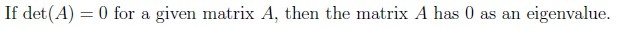
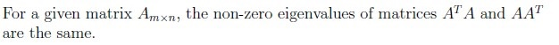
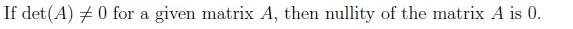
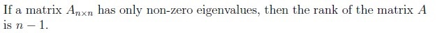
Q4 MSQ 3 marks select all that apply 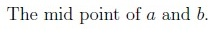
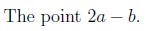
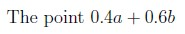
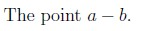
Comprehension passage - the questions below it refer to this
Based on the above data, answer the given subquestions.
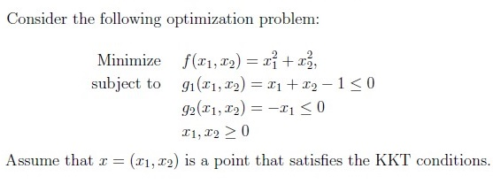
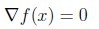
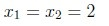
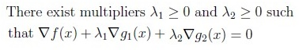
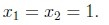
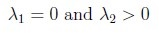
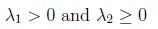
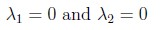
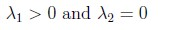
Q8 MSQ 4 marks select all that apply Which of the following options is/are true?
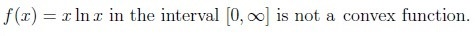
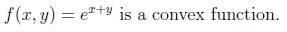
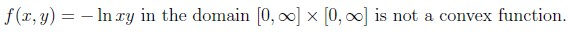
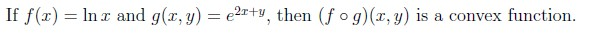
Q9 MSQ 4 marks select all that apply 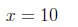
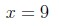
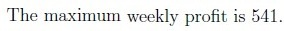
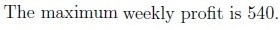
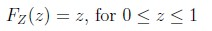
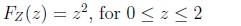
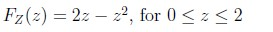
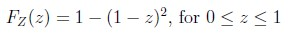
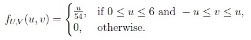
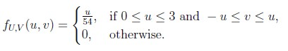
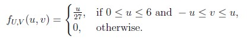
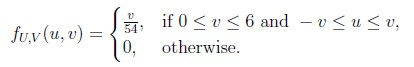
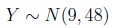
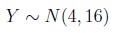
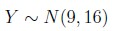
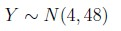
Normal(−2, 7) Normal(−2, 13) Normal(−2, 25) None of these
Answer key Q1 (MSQ, 3 marks): A, BQ2 (MSQ, 3 marks): C, DQ3 (MSQ, 3 marks): A, B, CQ4 (MSQ, 3 marks): A, CQ5 (MCQ, 2 marks): CQ6 (MCQ, 3 marks): BQ7 (SA, 1 marks): 1Q8 (MSQ, 4 marks): B, DQ9 (MSQ, 4 marks): A, CQ10 (MCQ, 3 marks): DQ11 (MCQ, 3 marks): AQ12 (MCQ, 3 marks): AQ13 (MCQ, 2 marks): CQ14 (SA, 3 marks): 92Concepts this paper tests Auto-generated summary from the source site. Handy as a checklist; the lessons above explain each idea from scratch.
Here’s a structured summary of core topics, concepts, principles, and equations essential for the exam, followed by Mermaid knowledge graphs to visualize relationships.
Core Topics & Key Concepts 1. Linear Algebra & Matrix Theory Key Concepts: A = ( 1 1 0 1 5 0 0 0 3 ) A = \begin{pmatrix}
1 & 1 & 0 \\
1 & 5 & 0 \\
0 & 0 & 3
\end{pmatrix} A = 1 1 0 1 5 0 0 0 3 Properties of A A A :
Positive Definite : x T A x > 0 \mathbf{x}^T A \mathbf{x} > 0 x T A x > 0 x ≠ 0 \mathbf{x} \neq 0 x = 0 Singularity : A A A det ( A ) ≠ 0 \det(A) \neq 0 det ( A ) = 0 Symmetric : A = A T A = A^T A = A T Special Matrices :
Unitary Matrix : A ∗ A = I A^* A = I A ∗ A = I Hermitian Matrix : A = A ∗ A = A^* A = A ∗ Eigenvalues of Hermitian matrices are real .Eigenvectors of unitary matrices are orthogonal .Key Equations: Quadratic Form Expansion :f ( x ) = ∑ i , j a i j x i x j f(\mathbf{x}) = \sum_{i,j} a_{ij} x_i x_j f ( x ) = i , j ∑ a ij x i x j Eigenvalue Equation :A v = λ v A \mathbf{v} = \lambda \mathbf{v} A v = λ v Determinant & Rank :det ( A ) = ∏ λ i (product of eigenvalues) \det(A) = \prod \lambda_i \quad \text{(product of eigenvalues)} det ( A ) = ∏ λ i (product of eigenvalues) rank ( A ) = number of non-zero eigenvalues \text{rank}(A) = \text{number of non-zero eigenvalues} rank ( A ) = number of non-zero eigenvalues 2. Convex Optimization Key Concepts: Convex Sets :
A set S S S a , b ∈ S a, b \in S a , b ∈ S θ a + ( 1 − θ ) b ∈ S \theta a + (1-\theta)b \in S θ a + ( 1 − θ ) b ∈ S θ ∈ [ 0 , 1 ] \theta \in [0,1] θ ∈ [ 0 , 1 ] Examples: Midpoint (θ = 0.5 \theta = 0.5 θ = 0.5 0.4 a + 0.6 b 0.4a + 0.6b 0.4 a + 0.6 b f ( θ x + ( 1 − θ ) y ) ≤ θ f ( x ) + ( 1 − θ ) f ( y ) f(\theta x + (1-\theta)y) \leq \theta f(x) + (1-\theta) f(y) f ( θ x + ( 1 − θ ) y ) ≤ θ f ( x ) + ( 1 − θ ) f ( y ) Examples :
f ( x ) = e x f(x) = e^x f ( x ) = e x f ( x ) = x ln x f(x) = x \ln x f ( x ) = x ln x x > 0 x > 0 x > 0 f ( x , y ) = e x + y f(x, y) = e^{x+y} f ( x , y ) = e x + y Composition f ∘ g f \circ g f ∘ g min f ( x ) s.t. g i ( x ) ≤ 0 , h j ( x ) = 0 \min f(\mathbf{x}) \quad \text{s.t.} \quad g_i(\mathbf{x}) \leq 0, \quad h_j(\mathbf{x}) = 0 min f ( x ) s.t. g i ( x ) ≤ 0 , h j ( x ) = 0 The KKT conditions are:
∇ f ( x ) + ∑ λ i ∇ g i ( x ) + ∑ μ j ∇ h j ( x ) = 0 \nabla f(\mathbf{x}) + \sum \lambda_i \nabla g_i(\mathbf{x}) + \sum \mu_j \nabla h_j(\mathbf{x}) = 0 ∇ f ( x ) + ∑ λ i ∇ g i ( x ) + ∑ μ j ∇ h j ( x ) = 0 λ i ≥ 0 , λ i g i ( x ) = 0 (complementary slackness) \lambda_i \geq 0, \quad \lambda_i g_i(\mathbf{x}) = 0 \quad \text{(complementary slackness)} λ i ≥ 0 , λ i g i ( x ) = 0 (complementary slackness) Key Equations: Convex Combination :θ x 1 + ( 1 − θ ) x 2 ∈ S for convex set S \theta x_1 + (1-\theta) x_2 \in S \quad \text{for convex set } S θ x 1 + ( 1 − θ ) x 2 ∈ S for convex set S KKT Lagrangian :L ( x , λ , μ ) = f ( x ) + ∑ λ i g i ( x ) + ∑ μ j h j ( x ) \mathcal{L}(\mathbf{x}, \lambda, \mu) = f(\mathbf{x}) + \sum \lambda_i g_i(\mathbf{x}) + \sum \mu_j h_j(\mathbf{x}) L ( x , λ , μ ) = f ( x ) + ∑ λ i g i ( x ) + ∑ μ j h j ( x ) Gradient Condition :∇ L = 0 \nabla \mathcal{L} = 0 ∇ L = 0 3. Probability & Statistics Key Concepts: f ( x ) = 1 2 π σ 2 e − ( x − μ ) 2 2 σ 2 f(x) = \frac{1}{\sqrt{2\pi\sigma^2}} e^{-\frac{(x-\mu)^2}{2\sigma^2}} f ( x ) = 2 π σ 2 1 e − 2 σ 2 ( x − μ ) 2 Linear Combinations of Normals : If X ∼ N ( μ 1 , σ 1 2 ) X \sim N(\mu_1, \sigma_1^2) X ∼ N ( μ 1 , σ 1 2 ) Y ∼ N ( μ 2 , σ 2 2 ) Y \sim N(\mu_2, \sigma_2^2) Y ∼ N ( μ 2 , σ 2 2 ) a X + b Y ∼ N ( a μ 1 + b μ 2 , a 2 σ 1 2 + b 2 σ 2 2 ) aX + bY \sim N(a\mu_1 + b\mu_2, a^2\sigma_1^2 + b^2\sigma_2^2) a X + bY ∼ N ( a μ 1 + b μ 2 , a 2 σ 1 2 + b 2 σ 2 2 ) f X ( x ) = ∫ f X , Y ( x , y ) d y f_X(x) = \int f_{X,Y}(x,y) \, dy f X ( x ) = ∫ f X , Y ( x , y ) d y Transformation of Variables : For U = X + Y U = X + Y U = X + Y V = X − Y V = X - Y V = X − Y f U , V ( u , v ) f_{U,V}(u,v) f U , V ( u , v ) CDF of Min/Max :
For independent X , Y ∼ Uniform ( 0 , 1 ) X, Y \sim \text{Uniform}(0,1) X , Y ∼ Uniform ( 0 , 1 ) Z = min ( X , Y ) Z = \min(X, Y) Z = min ( X , Y ) F Z ( z ) = 1 − ( 1 − z ) 2 F_Z(z) = 1 - (1 - z)^2 F Z ( z ) = 1 − ( 1 − z ) 2 Key Equations: CDF of Minimum :F Z ( z ) = 1 − ∏ ( 1 − F X ( z ) ) F_Z(z) = 1 - \prod (1 - F_X(z)) F Z ( z ) = 1 − ∏ ( 1 − F X ( z )) Linear Combination of Normals :W = a X + b Y ∼ N ( a μ X + b μ Y , a 2 σ X 2 + b 2 σ Y 2 ) W = aX + bY \sim N(a\mu_X + b\mu_Y, a^2\sigma_X^2 + b^2\sigma_Y^2) W = a X + bY ∼ N ( a μ X + b μ Y , a 2 σ X 2 + b 2 σ Y 2 ) Joint PDF Transformation :f U , V ( u , v ) = f X , Y ( x ( u , v ) , y ( u , v ) ) ⋅ ∣ J ∣ f_{U,V}(u,v) = f_{X,Y}(x(u,v), y(u,v)) \cdot |J| f U , V ( u , v ) = f X , Y ( x ( u , v ) , y ( u , v )) ⋅ ∣ J ∣ where J J J
4. Optimization Algorithms Key Concepts: x k + 1 = x k − η ∇ f ( x k ) \mathbf{x}_{k+1} = \mathbf{x}_k - \eta \nabla f(\mathbf{x}_k) x k + 1 = x k − η ∇ f ( x k ) Learning Rate (η \eta η : Controls step size.Example : For f ( x , y ) = x 2 + y 2 − 6 x − 8 y f(x,y) = x^2 + y^2 -6x -8y f ( x , y ) = x 2 + y 2 − 6 x − 8 y ∇ f = ( 2 x − 6 , 2 y − 8 ) \nabla f = (2x - 6, 2y - 8) ∇ f = ( 2 x − 6 , 2 y − 8 ) Starting at ( 1 , 2 ) (1, 2) ( 1 , 2 ) η = 0.2 \eta = 0.2 η = 0.2
x new = ( 1 , 2 ) − 0.2 ⋅ ( 2 ( 1 ) − 6 , 2 ( 2 ) − 8 ) = ( 1.8 , 2.8 ) \mathbf{x}_{\text{new}} = (1, 2) - 0.2 \cdot (2(1)-6, 2(2)-8) = (1.8, 2.8) x new = ( 1 , 2 ) − 0.2 ⋅ ( 2 ( 1 ) − 6 , 2 ( 2 ) − 8 ) = ( 1.8 , 2.8 ) Then 20 x + 20 y = 20 ( 1.8 ) + 20 ( 2.8 ) = 92 20x + 20y = 20(1.8) + 20(2.8) = 92 20 x + 20 y = 20 ( 1.8 ) + 20 ( 2.8 ) = 92
Key Equations: Gradient Descent Update :x k + 1 = x k − η ∇ f ( x k ) \mathbf{x}_{k+1} = \mathbf{x}_k - \eta \nabla f(\mathbf{x}_k) x k + 1 = x k − η ∇ f ( x k ) Gradient of Quadratic Function :∇ ( x 2 + y 2 − 6 x − 8 y ) = ( 2 x − 6 , 2 y − 8 ) \nabla (x^2 + y^2 -6x -8y) = (2x -6, 2y -8) ∇ ( x 2 + y 2 − 6 x − 8 y ) = ( 2 x − 6 , 2 y − 8 ) 2. Convex Optimization 3. Probability & Statistics 4. Optimization Algorithms Exam Preparation Checklist Linear Algebra :
Know how to construct A A A Understand positive definiteness, eigenvalues, and singularity. Recall properties of unitary/Hermitian matrices. Convex Optimization :
Master KKT conditions and convex set/function definitions. Practice deriving Lagrangians for constrained problems. Probability :
Be fluent in CDF/PDF transformations (e.g., min/max of uniforms). Memorize linear combination rules for normal distributions. Optimization Algorithms :
Implement gradient descent updates manually for simple functions. Key Equations to Memorize :
Quadratic form matrix A A A KKT Lagrangian and gradient conditions. CDF of min ( X , Y ) \min(X, Y) min ( X , Y ) Gradient descent update rule.